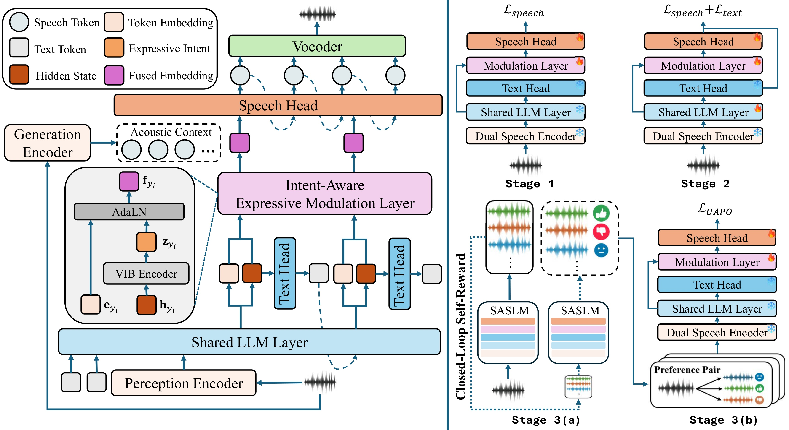

Speech Language Models (SLMs) exhibit strong semantic understanding, yet often fail to faithfully realize expressive intent in speech, producing prosody-flattened and emotionally inconsistent responses. We identify this mismatch as the semantic understanding–acoustic realization gap.
To better leverage semantic understanding for expressive acoustic realization, we propose SASLM (Self-Aware Speech Language Model), a proxy-free framework that bridges what the model thinks and how it speaks through self-aware intent and realization alignment: (1) Intent-Aware Bridging self-distills expressive intent internally from the evolving semantic generation states via a Variational Information Bottleneck (VIB), guiding expressive realization without external expressive supervision; while (2) Realization-Aware Alignment reflectively aligns generated acoustics with intended expression through self-reward optimization, progressively improving intent–realization consistency during speech generation.
Despite using only 3B parameters and 800 hours of expressive speech data, SASLM achieves state-of-the-art performance on EchoMind among open-source systems, surpassing models over 10× larger and approaching commercial systems.
To better leverage semantic understanding for expressive acoustic realization, we propose SASLM (Self-Aware Speech Language Model), a proxy-free framework that bridges what the model thinks and how it speaks through self-aware intent and realization alignment: (1) Intent-Aware Bridging self-distills expressive intent internally from the evolving semantic generation states via a Variational Information Bottleneck (VIB), guiding expressive realization without external expressive supervision; while (2) Realization-Aware Alignment reflectively aligns generated acoustics with intended expression through self-reward optimization, progressively improving intent–realization consistency during speech generation.
Despite using only 3B parameters and 800 hours of expressive speech data, SASLM achieves state-of-the-art performance on EchoMind among open-source systems, surpassing models over 10× larger and approaching commercial systems.

-
Identifying the Semantic Understanding–Acoustic Realization Gap Semantic hidden states optimized for text prediction are not inherently aligned with expressive acoustic realization, yielding prosody-flattened responses even with strong semantic understanding. We reformulate this as a self-aware intent and realization alignment problem.
-
Intent-Aware Bridging via VIB A VIB encoder self-distills latent expressive intent from LLM hidden states, disentangling expressive cues from lexical content and injecting them into speech conditioning via AdaLN—without any external emotion labels or style annotations.
-
Realization-Aware Alignment via Closed-Loop Self-Reward SASLM acts as its own critic: it generates multiple rollouts, scores them on emotion, prosody, and naturalness via rubric-based rewards, and optimizes via UAPO—closing the loop between intended expression and generated acoustics without human annotations.
-
State-of-the-Art among Open-Source SLMs Expressive quality is evaluated through whether emotion, prosody, and naturalness are contextually appropriate. With only 3B parameters and 800h data, SASLM-3B surpasses Qwen3-Omni-30B (10×) in both objective metrics (F0-Var: 63.44 vs. 49.76; EmoAlign: 35.61% vs. 25.03%) and subjective scores (Emo. / Pro. / Nat. / Ovr.: 4.10 / 4.36 / 4.49 / 4.33 vs. 3.87 / 4.11 / 4.30 / 4.25), while approaching commercial systems.
Navigate to Demo Sections
Evaluation on EchoMind Benchmark: Results from our paper on the EchoMind benchmark. One sample is randomly selected per emotion category for demonstration. CosyVoice2 (TTS w/ Oracle Prompt) synthesizes speech from the reference reply conditioned on ground-truth emotion labels, serving as an oracle intent-realization baseline. SASLM (Ours) is highlighted.
| Emotion | Question Speech / Text | SASLM (Ours) | GPT-4o-Audio | Qwen3-Omni-30B | CosyVoice2 (TTS w/ Oracle Prompt) |
|---|---|---|---|---|---|
| Angry | |||||
| Fearful | |||||
| Sad | |||||
| Disgusted | |||||
| Surprised | |||||
| Neutral | |||||
| Happy |
Open-Domain Generalization & Practicality: This section showcases SASLM's expressive generalization across diverse daily conversational topics, including samples with complex speech instructions. Without targeted training on these scenarios, SASLM demonstrates strong zero-shot generalization—driven by its self-aware intent and realization alignment, it naturally produces vivid and contextually appropriate speech. This highlights its potential for real-world applications such as voice assistants, spoken dialogue systems, and expressive speech dataset construction. SASLM (Ours) is highlighted.
| Scenario | User Question | SASLM (Ours) | Qwen3-Omni-30B |
|---|---|---|---|
| 🙏 Sincere Apology | |||
| 😠 Expressing Anger | |||
| 🗓️ Weekend Planning | |||
| 😢 Telling a Sad Story | |||
| 💪 Encouragement After Failure | |||
| 💔 Comforting a Friend |